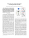

Publications#
All articles and papers can be found on HAL (Publication of Gregory Faraut) or on Google Scholar

Y. Monier, B. Denis, G. Faraut, N. Anwer. A new global optimization for hybrid automaton Identification. 17th Workshop on Discrete Event Systems (WODES’24), Apr 2024, Rio de Janeiro, France. pp.252-257, ⟨10.1016/j.ifacol.2024.07.043⟩. ⟨hal-04804902⟩Y. Monier, B. Denis, G. Faraut, N. Anwer. Identification de système à un automate hybride - revue des travaux récents. Modélisation des Systèmes Réactifs (MSR’23), CNRS, Nov 2023, Toulouse, France. ⟨hal-04465229⟩
R. Thibert, G. Faraut, S. Amari. Construction of Model-based Diagnosis of Cyber-Attack in Cyber-Physical Systems Using Labeled Petri Nets. 2023 IEEE 28th International Conference on Emerging Technologies and Factory Automation (ETFA), Sep 2023, Sinaïa, Romania. pp.1-6, ⟨10.1109/ETFA54631.2023.10275636⟩. ⟨hal-04213244⟩
Y. Monier, G. Faraut, B. Denis, N. Anwer. “Inferring Moore Machine for Adaptive Online Hybrid Automaton Identification.” IFAC World Congress 2023, Jul 2023, Yokohama, Japan. ⟨10.1016/j.ifacol.2023.10.040⟩. ⟨hal-04238162⟩
F. Delaine, G., “Mathematical Criteria for a Priori Performance Estimation of Activities of Daily Living Recognition”. Sensors, 2022, 22 (7), pp.2439. ⟨10.3390/s22072439⟩. ⟨hal-04160215⟩
K. Fouquet, G. Faraut and J. -J. Lesage, “Long-term deviation detection in human behavior,” 2021 IEEE 17th International Conference on Automation Science and Engineering (CASE), 2021, pp. 1401-1406, doi: 10.1109/CASE49439.2021.9551594.
K. Fouquet, G. Faraut and J. -J. Lesage, “ Model-Based Approach for Anomaly Detection in Smart Home Inhabitant Daily Life,” 2021 American Control Conference (ACC), 2021, pp. 3596-3601, doi: 10.23919/ACC50511.2021.9483053.
K. Viard, M. P. Fanti, G. Faraut and J. -J. Lesage, “Human Activity Discovery and Recognition Using Probabilistic Finite-State Automata,” IEEE Transactions on Automation Science and Engineering, vol. 17, no. 4, pp. 2085-2096, Oct. 2020, doi: 10.1109/TASE.2020.2989226. (JCR Q1)
K. Fouquet, G. Faraut and J. -J. Lesage, “Life Habits Modeling with Stochastic Timed Automata in Ambient Assisted Living,” 2020 IEEE International Conference on Systems, Man, and Cybernetics (SMC), 2020, pp. 2740-2745, doi: 10.1109/SMC42975.2020.9282900.
F. Basile, G. Faraut, L. Ferrara, J.-J. Lesage, « An Optimization-Based Approach to Discover the Unobservable Behavior of a Discrete-Event System Through Interpreted Petri Nets », IEEE Transactions on Automation Science and Engineering, 2019, pp.1-15, doi: 10,1109/TASE.2019.2944299 (JCR Q1)
F. Basile, G. Faraut, L. Ferrara, J.-J. Lesage. “Discovering of the unobservable behaviour of an Interpreted Petri Net model”. 58th IEEE Conf. on Decision and Control (CDC’19), Dec 2019, Nice, France. pp.2021-2026.
M.-P. Fanti, G. Faraut, J.-J. Lesage, M. Roccotelli. “An Integrated Framework for Binary Sensor Placement and Inhabitants Location Tracking.” IEEE Transactions on Systems, Man and Cybernetics, Part A: Systems and Humans, 2018, 48 (1), pp. 154-160. ⟨10.1109/TSMC.2016.2597699⟩. ⟨hal-01367581⟩ (JCR Q1)
J. Saives, G. Faraut, J.-J. Lesage. “Automated Partitioning of Concurrent Discrete-Event Systems for Distributed Behavioral Identification”, IEEE Transactions on Automation Science and Engineering, 2017, 0(99), pp.1-10. (JCR Q1)
. Guignard, J.-M. Faure, G. Faraut, “Model-based testing of PLC programs with appropriate conformance relations”. IEEE Transactions on Industrial Informatics, Institute of Electrical and Electronics Engineers, 2017 (JCR Q1)
M.P. Fanti, M. Roccotelli, G. Faraut, J.-J. Lesage, “Smart Placement of Motion Sensors in a Home Environment”. IEEE SMC 2017 - IEEE International Conference on Systems, Man, and Cybernetics (SMC), Oct 2017, Banff, Canada. pp.894-899, 2017.
K. Viard, M.P. Fanti, G. Faraut, J.-J. Lesage, “Recognition of Human Activity Based on Probabilistic Finite-State Automata”. 22nd IEEE Int. Conf. on Emerging Technologies and Factory Automation (ETFA’17), Sep 2017, Limassol, Cyprus.
K. Viard, M.P. Fanti, G. Faraut, J.-J. Lesage, “An Event-Based Approach for Discovering Activities of Daily Living by Hidden Markov Models”, 15th IEEE Int. Conf. on Ubiquitous Computing and Communications (IUCC 2016), Dec 2016, Granada, Spain
M.P. Fanti, M. Roccotelli, J.-J. Lesage, G. Faraut, “Motion Detector Placement Optimization in Smart Homes for Inhabitant Location Tracking”. 21st IEEE Int. Conf. on Emerging Technologies and Factory Automation, Sep 2016, Berlin, Germany, (ETFA’16)
J. Saives, C. Pianon and G. Faraut, “Activity Discovery and Detection of Behavioral Deviations of an Inhabitant From Binary Sensors,” IEEE Transactions on Automation Science and Engineering, vol. 12, no. 4, pp. 1211-1224, Oct. 2015, doi: 10.1109/TASE.2015.2471842. (JCR Q1)
J. Saives, G. Faraut and J. Lesage, “Identification of discrete event systems unobservable behaviour by petri nets using language projections,” 2015 European Control Conference (ECC), 2015, pp. 464-471, doi: 10.1109/ECC.2015.7330587.
J. Saives, G. Faraut. “Automated Generation of Models of Activities of Daily Living.” 12th International Workshop on Discrete Event Systems-WODES 2014, May 2014, Cachan, France. pp.13-20. ⟨hal-00999505⟩
M. Danancher, J. Lesage, L. Litz and G. Faraut, “Online Location Tracking of a Single Inhabitant Based on a State Estimator,” 2013 IEEE International Conference on Systems, Man, and Cybernetics, 2013, pp. 391-396, doi: 10.1109/SMC.2013.73.
M. Danancher, G. Faraut, J. Lesage and L. Litz, “A DES Simulator for Location Tracking of Inhabitants in Smart Home,” 2013 8th EUROSIM Congress on Modelling and Simulation, 2013, pp. 330-335, doi: 10.1109/EUROSIM.2013.66.
M. Danancher, J. Lesage, L. Litz and G. Faraut, “A Discrete event model for multiple inhabitants location tracking,” 2013 IEEE International Conference on Automation Science and Engineering (CASE), 2013, pp. 910-915, doi: 10.1109/CoASE.2013.6653946.
G. Faraut, L. Piétrac and E. Niel, “Process tracking by equivalent states in modal supervisory control,” 2011 IEEE International Conference on Emerging Technologies and Factory Automation ETFA2011, 2011, pp. 1-8, doi: 10.1109/ETFA.2011.6059040.
G. Faraut, L. Piétrac and E. Niel, “Equivalence of behaviors between centralized and multi-model approaches,” 2011 IEEE International Conference on Automation Science and Engineering, 2011, pp. 32-38, doi: 10.1109/CASE.2011.6042502.
G. Faraut, L. Piétrac and E. Niel, “Control law synthesis and reconfiguration using SCT,” 2010 Conference on Control and Fault-Tolerant Systems (SysTol), 2010, pp. 576-581, doi: 10.1109/SYSTOL.2010.5675977.
G. Faraut, L. Pietrac and E. Niel, “Formal Approach to Multimodal Control Design: Application to Mode Switching,” IEEE Transactions on Industrial Informatics, vol. 5, no. 4, pp. 443-453, Nov. 2009, doi: 10.1109/TII.2009.2028135. (JCR Q1)
G. Faraut, L. Piétrac and E. Niel, “A new framework for mode switching in SCT,” 2009 European Control Conference (ECC), 2009, pp. 1469-1474, doi: 10.23919/ECC.2009.7074613.
G. Faraut, L. Piétrac and E. Niel, “Identification of incompatible states in mode switching,” 2008 IEEE International Conference on Emerging Technologies and Factory Automation, 2008, pp. 121-128, doi: 10.1109/ETFA.2008.4638382.